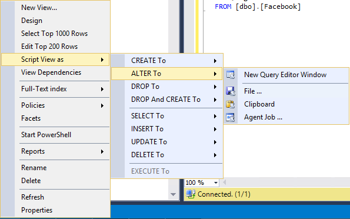

Python: Clean SQL views for documentation
TweetOne of the most tedious tasks of working with databases is to write and maintain documentation, in particular writing reports from tables and views.
So why not try to make this task a bit less heavy by using Python?
Step0-The input and the output
The script requires that the views are created using create view. Example:Right click on view
Copy view

Output view after python script

Step1 - Extract Columns Function
def extract_columns(in_txt): """Simple function to extract columns between select and from""" # Splitting by select i only choose text after select out_view = re.split(r'(?i)\bselect\b',in_txt)[1] # Splitting by from i only choose text before from out_view = re.split(r'(?i)\bfrom\b',out_view)[0] # Cleaning extra spaces and tabs out_view.strip() return out_view
Let's start by defining a function with the purpose of extracting only the columns from the script of a view. Thus ignoring everything before the Select statement and everything after the From statement.
Step2 -Let's start from the variables
import re # We open the file containing the view view = extract_columns(open('input.txt','r',encoding='utf-8').read()) # Now we insert text into the list and we create a new list view_l = view.split('\n') out_l = []
Now we declare the variables we are going to use.
- view: contains the input text
- view_l: is a list created by splitting text by line
- out_l: is the output list
Step3-Main Code
# Now we loop through all the lines of the view for num,line in enumerate(view_l): # Clean extra spaces line = line.strip() # Remove Comments line = line.split('--')[0] # Remove Commas line = line.replace(',','',1) # Substitute Tabs with Spaces line = line.replace('\t',' ') # While two spaces are in line we substitute the with one space while ' ' in line: line = line.replace(' ',' ') # Remove [ and ] line = line.replace ('[','').replace(']','') # If line is not empty if len(line)>0: # If line is not a comment if line[0]!='-': # We add the new line to out_l out_l.append(re.split(r'(?i)\bas\b',line))
Finally we come to the main code. The first part is a For loop, using the list we created in step2. For each line the script removes useless characters and comments and then adds the line to the new list.
Step4-Output Text
# Open output file with open('out.txt','w') as out_txt: # For line in output list for line in out_l: # Try / Except to output all the values to the file separated by ',' print(line) if len(line)>1: out_txt.write('as'.join(line[0:-1]).strip()+'|'+str(line[-1]).strip()+'\n') else: out_txt.write(str(line[0]).strip()+'|'+str(line[0]).strip()+'\n')
In the last part we write to an external file using a Try/Except to avoid IndexErrors.
This article is also available on PowerBloggerBI
Comments
Comments powered by Disqus